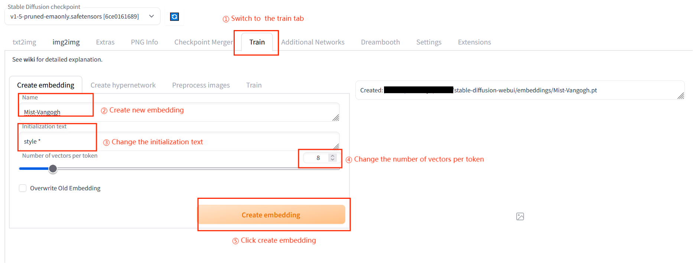
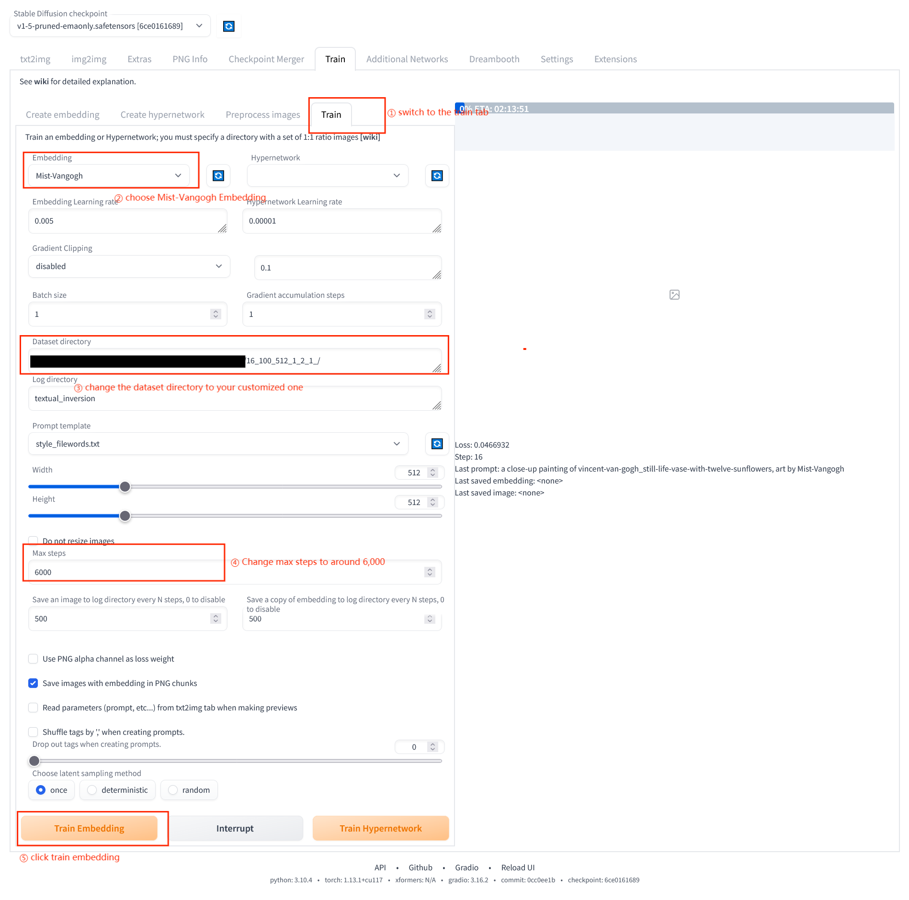

效果验证
Mist可用于避免不同的AI for Art应用模仿图片的风格和内容。为了帮助用户快速验证 Mist的性能，我们在本指南中详细介绍了验证的步骤。
我们在 Google Drive 中提供了 两组图片用于效果验证。依照指南后续的步骤，您可以使用这些图片验证Mist的效果。其中，“Training”文件夹中的图片用于在textual inversion、Dreambooth和scenario.gg的场景下进行测试。 “Img2Img”文件夹中的图片用于在NovelAI的场景下进行测试。当然，【您也可以使用自己的图片进行测试】。
Textual Inversion
Textual inversion是一种使用伪词总结输入图像以进一步进行风格转换的工具。为了复现我们的测试结果，您可以访问 GitHub 上开源的Stable-diffuion-webui使用textual inversion功能。
访问textual inversion选项；创建名为Mist-Vangogh的embedding，设置Initialization text为style *，number of vectors per token为8。
然后，使用经Mist处理的图像进行6,000次迭代训练。
训练完成后，您可以通过在Img2Img或txt2Img中添加prompt “An image in the style of Mist-Vangogh”生成图像。

NovelAI Img2Img
NovelAI是一个支持 Img2Img generation 图像生成的在线商业网站。使用NAI Diffusion Anime功能，设置prompt为“woman with a Parasol, high resolution, outdoor, flowers, blue sky”，resolution为512，random seed为1255，steps为40，scale为20，sampler为DPM++ 2M。将强度分别更改为0.25、0.35和0.5。

Dreambooth
Dreambooth是一种对Stable diffusion进行重新训练以实现定制生成的工具。我们使用 diffuser 提供的Dreambooth训练脚本。使用经Mist处理的梵高图像重新训练Stable diffusion v1.4的unet和text_encoder，固定learning rate为2e-6，max training steps为2000。下面的代码是我们用于训练Dreambooth的脚本：
export MODEL_NAME="CompVis/stable-diffusion-v1-4"
export INSTANCE_DIR="../Mist_Vangogh"
export OUTPUT_DIR="dreambooth/Mist_Vangogh/"
accelerate launch train_dreambooth.py \
--pretrained_model_name_or_path=$MODEL_NAME \
--instance_data_dir=$INSTANCE_DIR \
--output_dir=$OUTPUT_DIR \
--instance_prompt="a painting style" \
--resolution=512 \
--train_batch_size=1 \
--gradient_accumulation_steps=1 \
--learning_rate=2e-6 \
--lr_scheduler="constant" \
--lr_warmup_steps=0 \
--max_train_steps=2000 \
--train_text_encoder \
您还可以在 dreambooth extension of SDM webui 上进行测试。它会产生类似的结果。
Scenario.gg
Scenario.gg 是一个支持定制生成的网站。首先，访问“Create a Generator”选项。然后，使用经Mist处理的梵高图像（Mist-Vangogh）训练生成器。我们使用scenario.gg提供的自动训练模式，并将训练类别设置为“Art style - Painting”。


需要注意的是，scenario.gg的默认训练参数可能会不断变化。我们在scenario.gg上测试Mist时，其默认参数如下：

随后，您可以访问“Generate Images”选项，并生成基于Mist-Vangogh训练的图像。